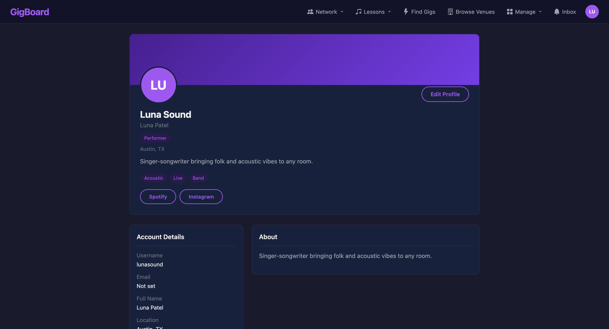
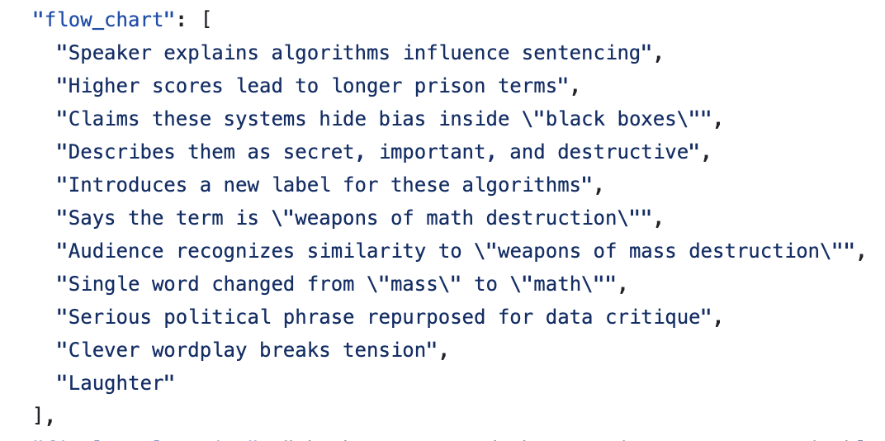
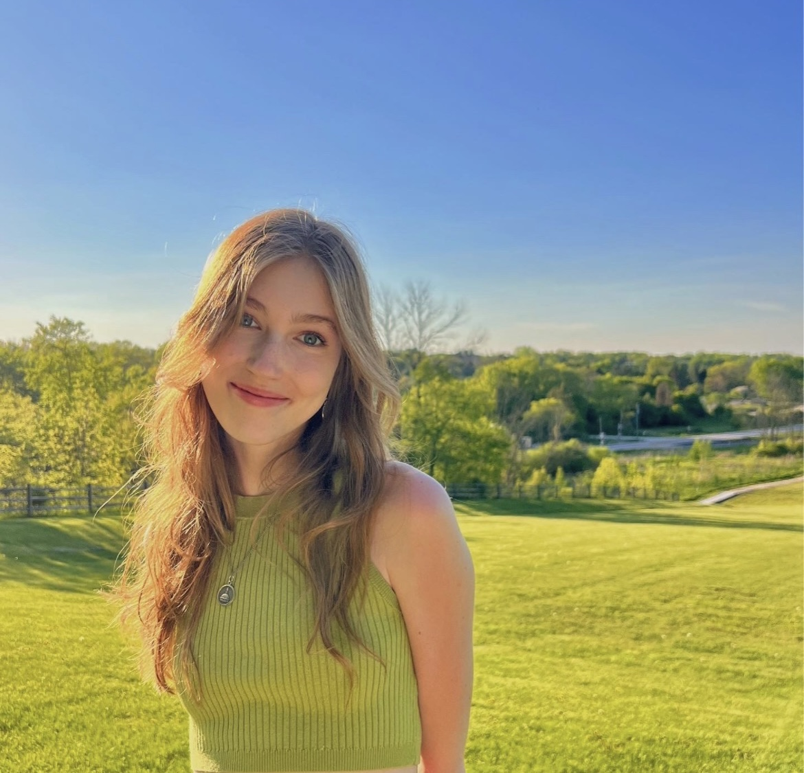

I'm a software engineer currently living in Wrigleyville, Chicago. In my current role at 84.51º, I build tools and infrastructure for hundreds of teams working with data and AI. I studied computer science at Notre Dame, and I've been absolutely loving getting to apply everything I learned there to my current work.
GigBoardScreenshot of the GigBoard application gigboard.jpg

A Django web application connecting musicians and venues. I developed the fan-following functionality, including the database model, follow/unfollow views, performer directory, and personalized gig schedule.
AI & humorDiagram or figure from the research paper ai-humor.jpg

Can an LLM explain why a joke is funny? In my last semester at Notre Dame, I did research on how language models explain humor in conversations. (I can confirm that explaining a joke in step-by-step detail does NOT make it funnier.) I built a Python/LLM pipeline for generating structured humor examples, helped design the data schema, and co-authored the paper.
I develop internal cloud tools and infrastructure for data and AI teams.
Developed the infrastructure provisioning layer of a self-service AI agent deployment platform.
Automated workflows for provisioning privacy-preserving data collaboration environments.
Built a deployment pipeline that refreshes platform system data.
Improved runtime upgrade and release processes for downstream engineering teams.
0284.51°Software Engineering Intern · AI EnablementMay — Aug 2025+
Worked on deploying and monitoring machine learning models.
Improved testing, logging, and monitoring for NVIDIA Triton inference servers.
Built a model deployment workflow using GitHub Actions and Azure Blob Storage.
Created Streamlit and FastAPI demos for internal recommendation models.
03University of Notre DameAI Undergraduate Researcher · College of Engineering2024 — 2025+
Researched Bayesian neural networks and uncertainty quantification with Dr. Michael Niemier. I trained and evaluated PyTorch and TensorFlow models, built tools to visualize research data, and received a SUPREME Microelectronics Fellowship to continue the work.
04NASA Goddard Space Flight CenterSoftware Systems Engineering Intern · GMSECJun — Aug 2023+
Built reusable UI/API test libraries and automated end-to-end validation using Python, Selenium, Robot Framework, and Docker for GMSEC software, which supports communication between space mission systems.
05CS for GoodTechnical Lead · University of Notre DameDuring college+
Helped coordinate student teams working with nonprofits on practical technical tasks, including websites, data analysis, and digitization.
03 / about
About me

from the camera roll / somewhere green
outside of work
A little about me.
I graduated from Notre Dame in 2026 with a B.S. in Computer Science and a minor in Digital Marketing. Now I live in Chicago and work in AI infrastructure.
I’m interested in the social and ethical side of AI, too.
Outside of coding, I like photography, reading, coffee, guitar, and hiking.